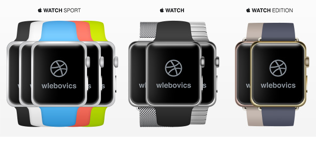

普段ほとんどテレビを見ない私ですが、最近久しぶりにはまっているのが中国の大河ドラマ。世界史を好きな私としては、織田信長や豊臣秀吉など日本の英雄物語と同じか、あるいはそれ以上に親しみ深い話があふれています。そんなわけで、珍しくしっかりと視聴していたわけですが、お気に入りのケーブルテレビ番組でここ数ヶ月連続放映していたのは「項羽と劉邦」。今回はこの「項羽と劉邦」について書いてみましょう。
「項羽と劉邦」は、今から２２００年ほど前の中国で起こった「楚漢戦争」という戦いを描いたお話です。元々小さな国々に分かれて争っていた中国は、紀元前２２１年に秦という国の政という王様によって統一されます。みなさんもご存じの「始皇帝」です。彼が作った「秦」という王朝は、しかし長くは続きませんでした。大規模な土木工事に民衆を動員したり、厳しすぎる法律で人々を圧迫したため、始皇帝が死ぬとあちこちで反乱が始まります。
この反乱の中心人物となり、ついに秦を滅ぼすに至ったのが、かつて秦に滅ぼされた「楚」という国の将軍一族に連なる項羽でした。彼は戦争になるとめっぽう強く、破竹の快進撃をつづけていきます。しかし、無類の強さの一方で、彼の気性の荒さは多くの敵を作っていきます。項羽と敵対することとなった人々は、もう一人の英雄劉邦のもとに集い、やがて大勢力に成長することになりました。この劉邦、元は地方の食い詰め者でしたが、不思議な人望があり、周囲にはきら星のごとく俊才が集まってきます。本人が圧倒的な才能を持つ項羽と、本人には才能はありませんが、優秀な部下に恵まれた劉邦。この二人は秦を滅ぼしたあと、ついに正面衝突をすることになります。これが前述した「楚漢戦争」という戦いです。
劉邦は３人の超有能な部下の助けを借りて、この戦いを勝ち抜きます。内政官の蕭何（しょうか）、軍師の張良、将軍の韓信です。戦争が終わったあと、韓信と劉邦が世話話をしている時、劉邦は彼に「自分はどれほどの将軍だとおもうか？」と尋ねました。すると彼は「陛下はせいぜい十万人ほどの兵を指揮する程度です」と答えます。劉邦は重ねて彼に聞きました。「では、おまえはどの程度だ？」。すると彼はこう答えます。「兵が多ければ多いほどよいでしょう。しかし、陛下は“将の上に立つ将”として有能なのです」。
つまり、凄い能力を持った人物をうまく「使える」リーダーシップが、劉邦の強みだったのです。この話を思い出して私が考えたのは、最近発表された「AppleWatch」。あのiPhoneのアップルが出した腕時計型デバイスです。
私は方向音痴なこともあって、車にはカーナビがかかせません。徒歩の場合にも、迷わないようにスマートフォンの地図を見ながら歩きます。その結果、道を覚えることがますます苦手になりました。AppleWatchを買えば、たぶんこの傾向はますますひどくなるでしょう。道順のナビゲートから電車の到着時間まで、至れり尽くせりで全て通知してくれるのですから、これほど楽なことはありません。どんなに遠くにでも、場合によっては地球の裏側まで「何も考えずに」行くことができるのです！
こんな状況を「よくない」という人もいます。人間に備わった野性の能力が、テクノロジーによってどんどん減衰していくことに対して警鐘を鳴らす文章をよく見かけます。読んでみるとなるほどもっともと思うのですが、一方で「別にそれでいいのではないか」と感じる自分もいます。苦手なことは機械に代替してもらっても、劉邦のように「将の将」であればそれでいいのではないか、そう思うのです。今後コンピュータがますます進歩するであろうことは疑いありません。であれば、その有能さをどれだけうまく使えるかを考える方が、自分ですべてやろうとするよりもよい結果を生み出すかもしれません。
楚漢戦争では、自分ですべてをやろうとした項羽は、仲間をうまく使った劉邦に敗れてしまいました。二千二百年後の現代、われわれもAppleWatchを使いこなす劉邦になりたいですね。